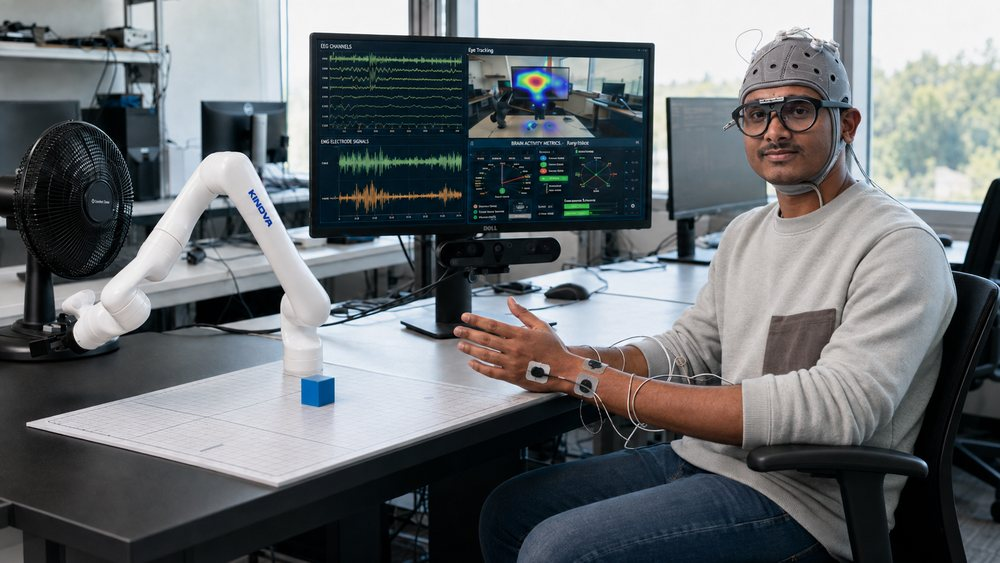
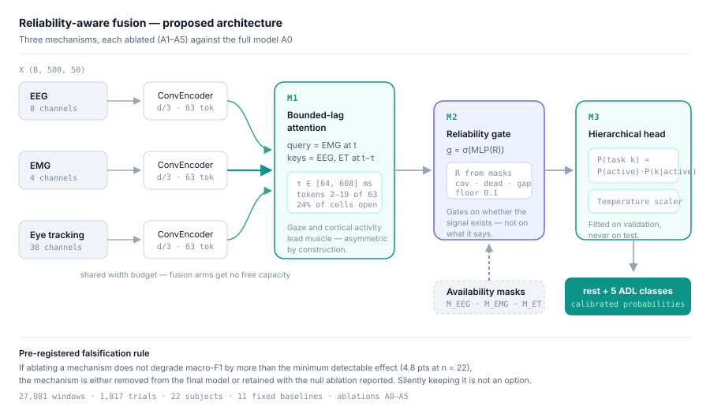

Multimodal fusion
Transformer and state-space fusion across EEG, EMG, gaze and RGB-D — with cross-modal attention that is gated on measured reliability rather than on content, so a dead channel is down-weighted instead of hallucinated through.
Robot Learning · Computer Vision · Multimodal ML
Ph.D. Candidate, Saint Louis University
I build multimodal machine-learning systems for robots, and I work on two halves of the same problem. One is fusing human signals — EEG, EMG and eye tracking — into intent models that keep working when a sensor degrades or drops out entirely. The other is teaching robots manipulation from ordinary human video, so a new skill costs a few recordings of a person instead of hundreds of teleoperation demonstrations.
That covers the whole stack: RGB-D perception with SAM2 segmentation, hand-pose estimation and depth fusion; diffusion policies trained on 155K frames of human demonstrations; and deployment on a real Kinova Gen3 through ROS 2. The thread running through all of it is calibrated uncertainty — a robot that knows when its own perception cannot support the action it is about to take.


A robot that misreads a scene and acts anyway is more dangerous than one that stops. Across three projects I attack the same problem from different angles: estimate how much the current input can be trusted, and let that estimate gate what the robot does next.
Transformer and state-space fusion across EEG, EMG, gaze and RGB-D — with cross-modal attention that is gated on measured reliability rather than on content, so a dead channel is down-weighted instead of hallucinated through.
Diffusion policies trained on RGB-D recordings of people, not teleoperation. Hand-pose estimation, SAM2 segmentation, ICP refinement and Cartesian retargeting turn ordinary footage into executable Kinova Gen3 trajectories.
Commit-readiness scores, dwell/hysteresis filtering, geometric feasibility checks and calibrated confidence — evaluated with policy-level metrics (false commits per 1k rest windows, missed intent) rather than accuracy alone.
Four research and industry roles across robotics, clinical AI, analytics and electric machines.
Saint Louis University — MechaRithm Lab
Authentic Brands Group
Fordham University — Multimodal AI for clinical NLP & imaging
Kyungsung University — Switched Reluctance Machines
Mechatronics to data science to robotics — the reason the work spans hardware, signal processing and machine learning.
Saint Louis University
Fordham University
Kyungsung University
Each one goes from raw sensor capture through model design to evaluation on hardware. Follow any card for the full case study — architecture, results, ablations and what failed.

Commit-as-decision readiness for feasibility-grounded shared autonomy
Most intent decoders answer what the user wants. This one answers when it is safe to start. A continuous commit-readiness score is converted into discrete commit events by dwell/hysteresis filtering, then a HOLD–ASSIST–COMMIT supervisor requires perception and IK feasibility before any motion is issued.

Safety-aware tri-modal intent recognition for assistive robotics
A lightweight tri-modal transformer with per-modality TCN + BiGRU encoders and reliability-gated cross-modal attention, pretrained with a multi-objective self-supervised loss. Evaluated not just by accuracy but by what a safety policy actually does when a sensor drops out.

Teaching manipulation from human video — and knowing when vision fails
People are filmed doing five household tasks; the human arm is inpainted out, a simulated Kinova is composited in, and a diffusion policy learns from the result. The contribution is a reliability gate that pauses the robot exactly on the frames its perception cannot support.
I own this project end to end: the capture rig, the perception stack, the policy and the evaluation. The offline result is done; I am now running the real-robot study on the Kinova Gen3 — gate on versus gate off in alternating blocks, with per-task success criteria written down before the first trial. The gate's decision is logged even when it is switched off, so the control arm can answer whether the robot actually failed on the frames it would have paused.
Remaining work before the IEEE Transactions on Robotics submission: close out the ablation set and the embodiment-matching step that keeps the deployed policy seeing the rendered arm it was trained on.

A pre-registered study of what fusion architecture can and cannot claim
Eleven baselines and six ablations fixed in writing before any result was read, with a declared minimum detectable effect of 4.8 points at n = 22. Three mechanisms — bounded-lag gaze guidance, mask-driven reliability gating, calibrated hierarchical inference — each stated so it can be falsified by its own ablation.
I rebuilt the preprocessing after finding five defects that invalidated the earlier results — duplicated EEG samples, an unapplied EMG latency, a ragged gaze feature width — and wrote the pre-registration that fixes the claims and the comparison set in advance. I am currently training the eleven baseline arms across 22 leave-one-subject-out folds.
The proposed model is deliberately not trained until those land: the pre-registration makes the baseline outcome decide whether an architecture claim is defensible at all. Next are the two axes this sample size can actually resolve — modality-dropout robustness and calibration — for a submission to Information Fusion.
Conference submission videos and pipeline renders. Everything below is real hardware or real recorded data — no concept animations.
Six journal articles and ten conference papers spanning assistive robotics, multimodal fusion and clinical AI. Search the list or filter by type and year.
No publications match that search.
Tri-modal data collection: EEG cap, surface EMG on the upper limb, and gaze from Pupil Labs Neon glasses, all streamed and synchronised through Lab Streaming Layer.
I am seeking internships and 2027 full-time positions in machine learning, robot learning and multimodal perception. Happy to talk through any of the projects above, or share code and data on request.
{kind=link}
{kind=link}
{kind=link}
{kind=link}